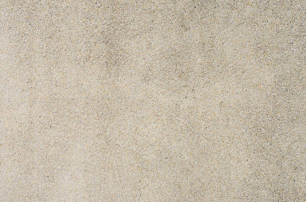
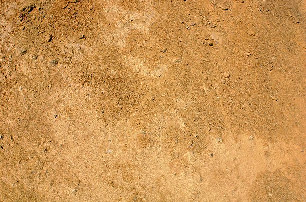
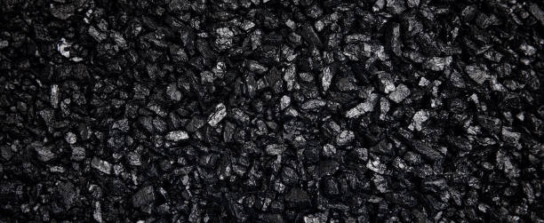
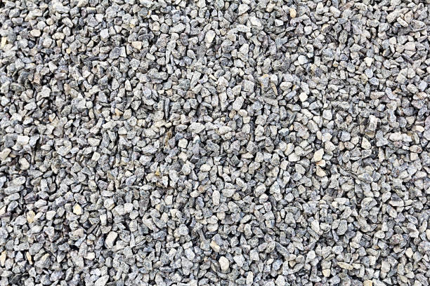
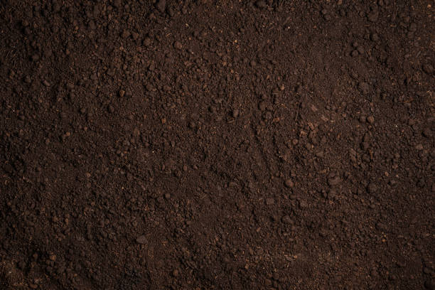

Pełen zakres działalności
Kompleksowe rozwiązania drogowe
Od wydobycia kruszywa i projektowania autorskich receptur w laboratorium, przez rygorystyczną produkcję, aż po precyzyjne układanie nawierzchni w terenie.
Od wydobycia kruszywa i projektowania autorskich receptur w laboratorium, przez rygorystyczną produkcję, aż po precyzyjne układanie nawierzchni w terenie.
Nasze otaczarnie i węzły betoniarskie dostarczają 300 ton mieszanek na godzinę. Jakość każdego z nich poparta jest rygorystycznymi normami europejskimi oraz stałym nadzorem naukowym.

Oferujemy asfalty dostosowane do każdej kategorii ruchu (od KR1 po autostradowe KR7). Receptury optymalizujemy m.in. dzięki bliskiej współpracy badawczej z Politechniką Gdańską (PG), co pozwala nam weryfikować innowacyjne dodatki polimerowe.

Nasze zautomatyzowane węzły gwarantują jednorodność i powtarzalność każdej partii. Posiadamy certyfikację na betony o ekstremalnych parametrach wytrzymałościowych oraz mrozoodpornych, niezbędnych w infrastrukturze publicznej.

Eksploatujemy bogate złoża na Pomorzu. Zaawansowane technologicznie linie przesiewająco-płuczące produkują czyste, wyselekcjonowane frakcje dla naszej produkcji i na sprzedaż hurtową.

Piasek siany 0–3 to uniwersalne kruszywo o równomiernej frakcji, które idealnie sprawdza się jako stabilna podsypka pod kostkę brukową i płyty oraz przy wyrównywaniu terenu i tworzeniu zapraw. Z kolei piasek płukany 0–2 charakteryzuje się wyjątkową czystością dzięki procesowi usuwania pyłów, co gwarantuje doskonałą przyczepność i gładką strukturę niezbędną przy profesjonalnych tynkach, wylewkach oraz pracach murarskich.

Drobne kruszywo łamane o uziarnieniu od 0 do 2 mm, powstające w procesie kruszenia skał. Charakteryzuje się ostrymi, nieregularnymi ziarnami, które zapewniają bardzo dobrą spoistość i stabilność po zagęszczeniu. Jest stosowany przy produkcji mieszanek mineralno-asfaltowych oraz w robotach drogowych. Miał kamienny 0/2 cechuje się wysoką nośnością i odpornością na obciążenia mechaniczne.

Frakcja 2–8 mm znajduje zastosowanie m.in. w produkcji betonu oraz jako materiał drenażowy i dekoracyjny. Żwir 8–16 mm jest często wykorzystywany do drenaży, fundamentów oraz w budownictwie drogowym. Frakcja 16–32 mm sprawdza się przy wykonywaniu podbudów, systemów odwadniających oraz jako warstwa filtracyjna.
Kruszywo uzyskiwane w procesie mechanicznego kruszenia skał, charakteryzujące się ostrymi, nieregularnymi krawędziami. Dzięki swojej strukturze zapewniają bardzo dobrą przyczepność i stabilność w mieszankach budowlanych oraz drogowych. Frakcja 2–8 mm jest często stosowana w produkcji betonu oraz jako materiał dekoracyjny. Grysy 8–11 mm wykorzystywane są w budownictwie drogowym, przy wykonywaniu podbudów i nawierzchni asfaltowych. Frakcja 11–16 mm znajduje zastosowanie w konstrukcjach nośnych, drenażach oraz jako warstwa wykończeniowa nawierzchni.

Oferujemy szeroki wybór materiałów sypkich, od wytrzymałych podbudów 0–31,5 i uniwersalnych pospółek 0–16, które gwarantują doskonałą stabilizację podłoża, po ekologiczny kruszbet z recyklingu o wysokiej nośności. W naszej ofercie znajdziesz również żyzny humus idealny do zakładania ogrodów oraz dekoracyjne nadziarno norweskie, które dzięki swojej odporności i unikalnej kolorystyce stanowi trwałe wykończenie ścieżek i rabat.
Złóż zamówienie na kruszywo z transportem. Oblicz zapotrzebowanie za pomocą naszego kalkulatora i skontaktuj się z nami, aby potwierdzić wycenę i czas dostawy.
Mamy surowiec, produkujemy technologię i na samym końcu – wbudowujemy ją we właściwe miejsce. Dysponujemy rozściełaczami z innowacyjnymi systemami niwelacji 3D, układając warstwy jezdne z milimetrową dokładnością.

Nasze akredytowane laboratorium świadczy usługi nie tylko na potrzeby własne, ale również zewnętrznych inwestorów. Realizujemy odwierty w asfalcie, badania nośności gruntu (płyta VSS), czy dogłębną analizę składu ziarnowego kruszyw.
Szczegółowa oferta badań i analiz